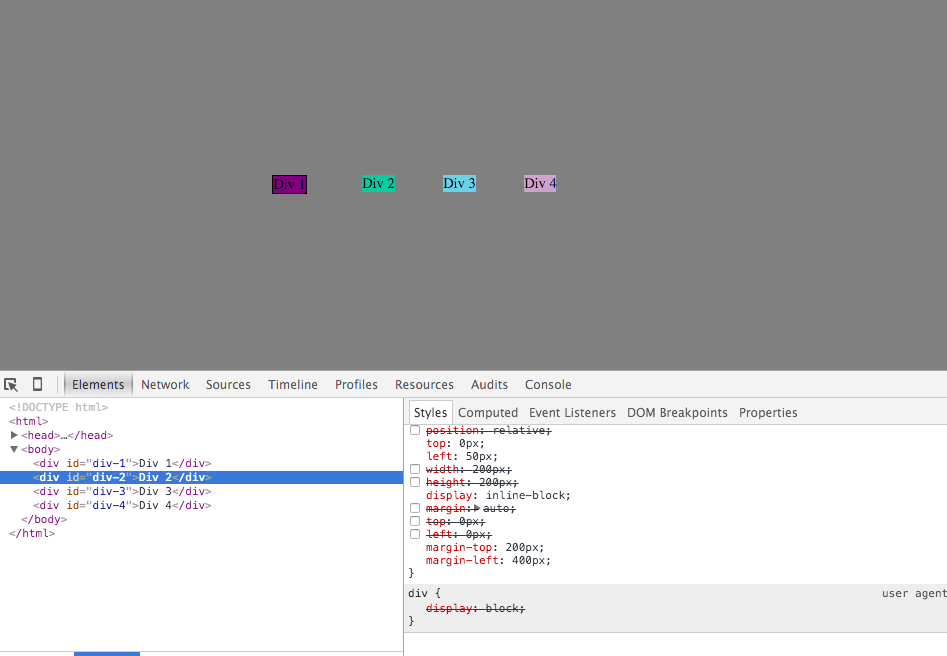
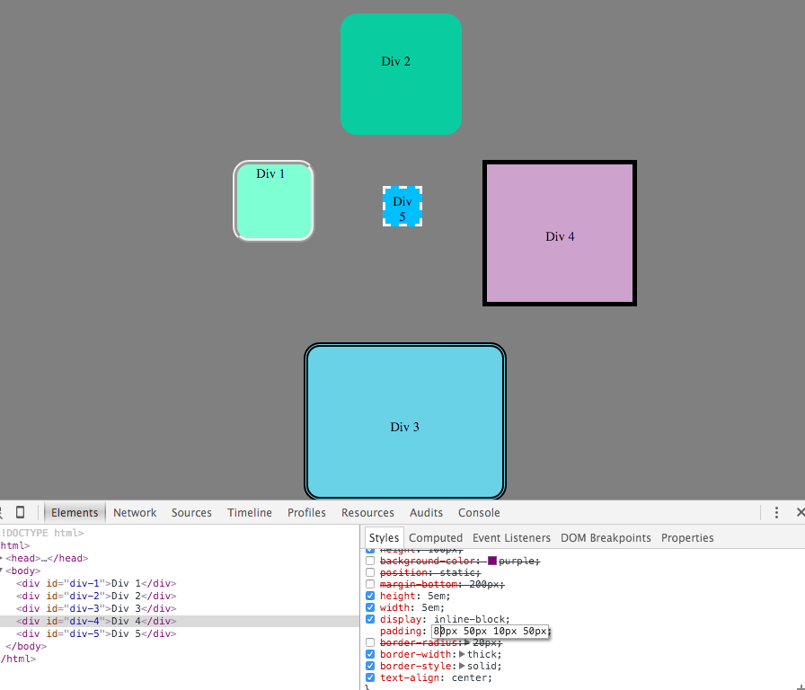

My First foray into css
or :how I didn't stop worrying or learn to love absolute positioning
11/9/2015
Hello Again Blog!
Today we will discuss a little about the basic elements that surround any piece of content on the page. They are padding, border, and margin. In that order outward from the content itself. In the most basic definition. Padding is the space between the content and the border. The border is a (usually) visual demarcation between the content any other element on the page. The margin is the space between the element and another element on the page.Padding.   Check out the difference between the the fours boxes in these pictures. The boxes in the first picture have almost no colored space between the letters in each box and the border. Some of the boxes in the second picture have large empty spaces of background color between the letters in the center and the border around the box. That space in between the letter in the border is called padding. In the first picture it is very close to 0. In the second picture it is considerably larger.
Border. As discussed in the padding section the border is the line that encases the edges of the element, in this case the boxes labeled div 1, div 2, ... As you can see by comparing the Div 2 box, (where no visible border is expressed), and div 3,4 , there are many different styling aspects that can be applied to the border of an element.Margin. Margins are the spaces between the different boxes. If you look back at the first picture of the small equal sized boxes displayed in the center of the page, they are each separated by a small area of gray background about the same size as the boxes themselves. That gray space in between each box is the margin.